La Boda
민 & 라우라
2027년 8월 6일 금요일
스페인, 비고(Vigo)
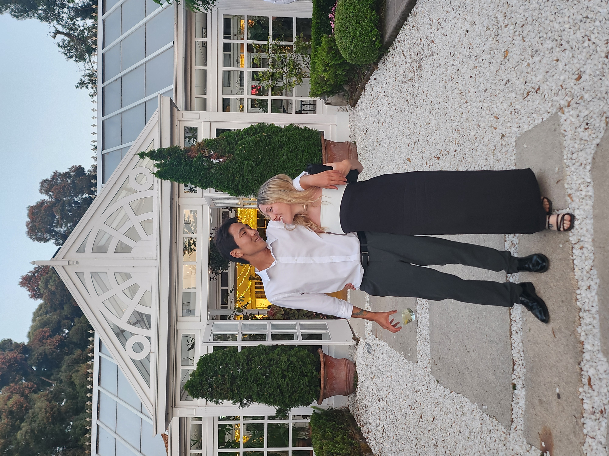
다른 두 사람이
하나의 삶을 이룹니다.
참 재미있는 여정이 되겠습니다.
결혼식 당일 일정 참고
스페인의 결혼식 양식을 따릅니다.
16:00 · 셔틀버스 탑승 (Shuttle)
숙소 인근 지정 장소에서 식장행 전용 셔틀버스 탑승
17:00 (약 40분) · 본식 세레모니 (Ceremonia)
야외 가든에서 진행 (우천 시 실내 공간 진행)
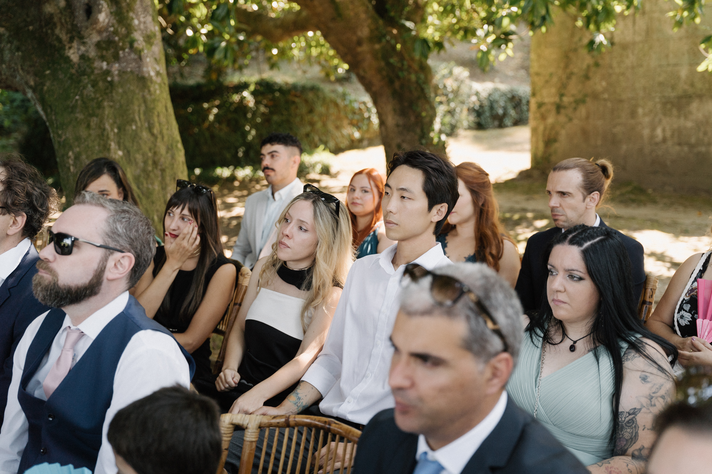
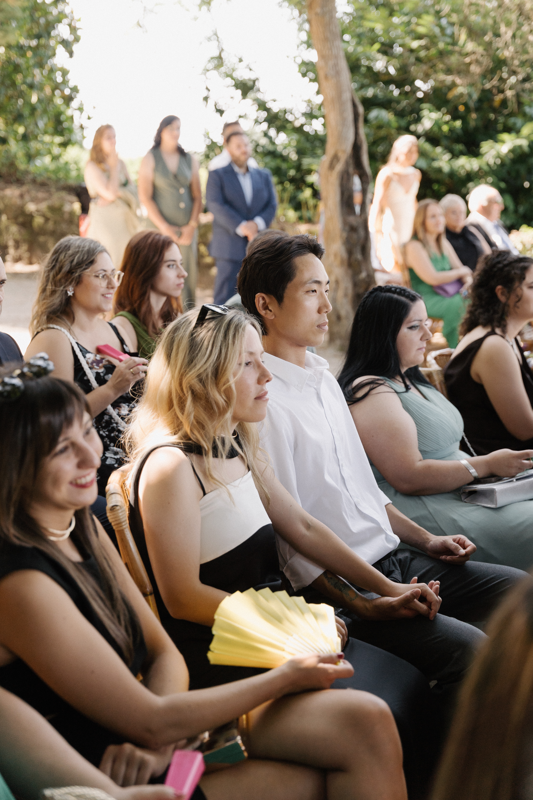
18:00 - 20:00 (2h) · 다과회 (Cóctel)
음료 및 주류, 제철 한입거리 타파스, 하몽과 함께 자유로운 담화
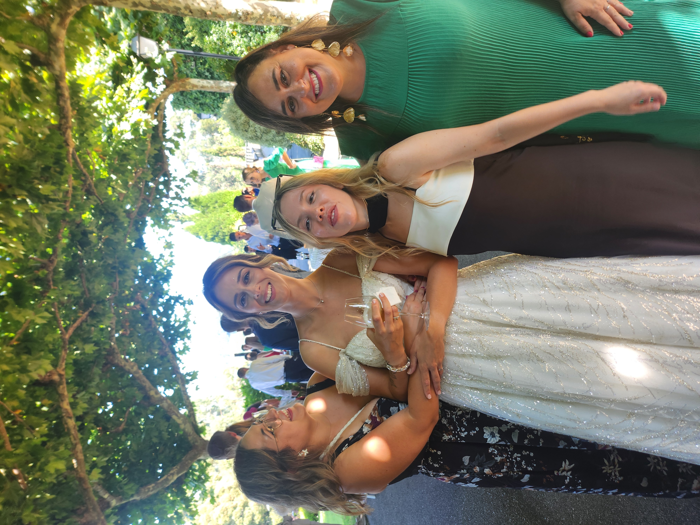
20:00 - 22:00 (2h) · 피로연 만찬 (Banquete)
전채 요리, 메인 요리, 디저트 3코스 식사
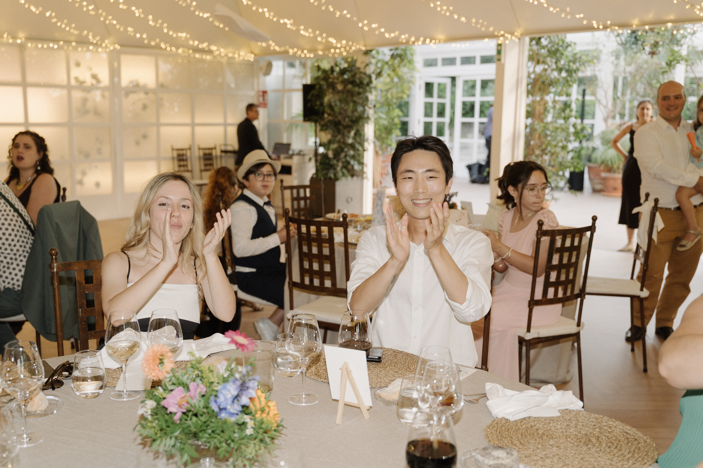
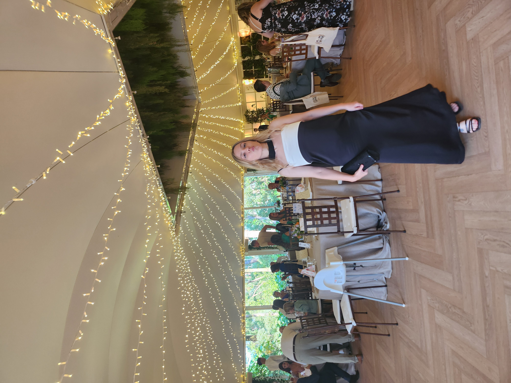
22:00 - 02:00 ~ · 파티 (Barra Libre)
DJ 음악과 무제한 주류가 함께하는 축하 파티
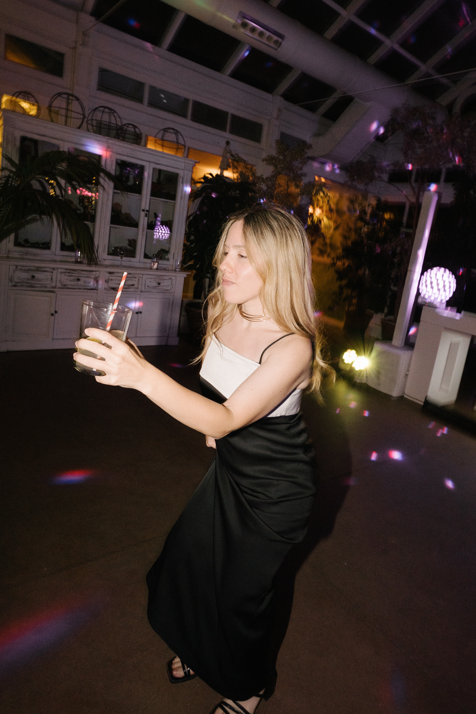
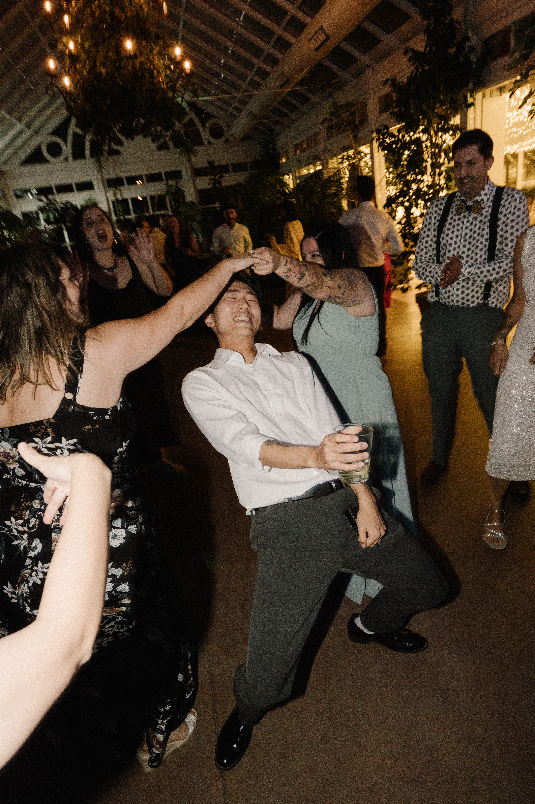
Dress Code
복장 안내
• 한국 일반 결혼식과 다르지 않습니다.
• 흰색 계열의 원피스나 정장은 신부를 위해 양해 부탁드립니다.
• 여성은 원피스 또는 세미/캐쥬얼 포멀 스타일을 권장합니다.
• 남성은 단정한 정장 또는 세미/캐쥬얼 포멀 스타일을 권장합니다.
◦ 넥타이 등은 자유이지만, 구두는 신으셔야 합니다.
Stay
'비고'에서의 숙소
• 저와 라우라가 참석 인원 수와 여러분의 개인적인 일정에 따라 유동적으로 관리합니다.
◦ 저희 집에서 같이 지내시거나, 혹은 인근 호텔 수배합니다.
• 참석하시는 분들은 '비고'에서의 숙소는 따로 예약하지 마시고, 저에게 도착 날짜와 출발 날짜를 사전에 공지해 주세요.
What could do in Vigo
비고에서 즐길 거리
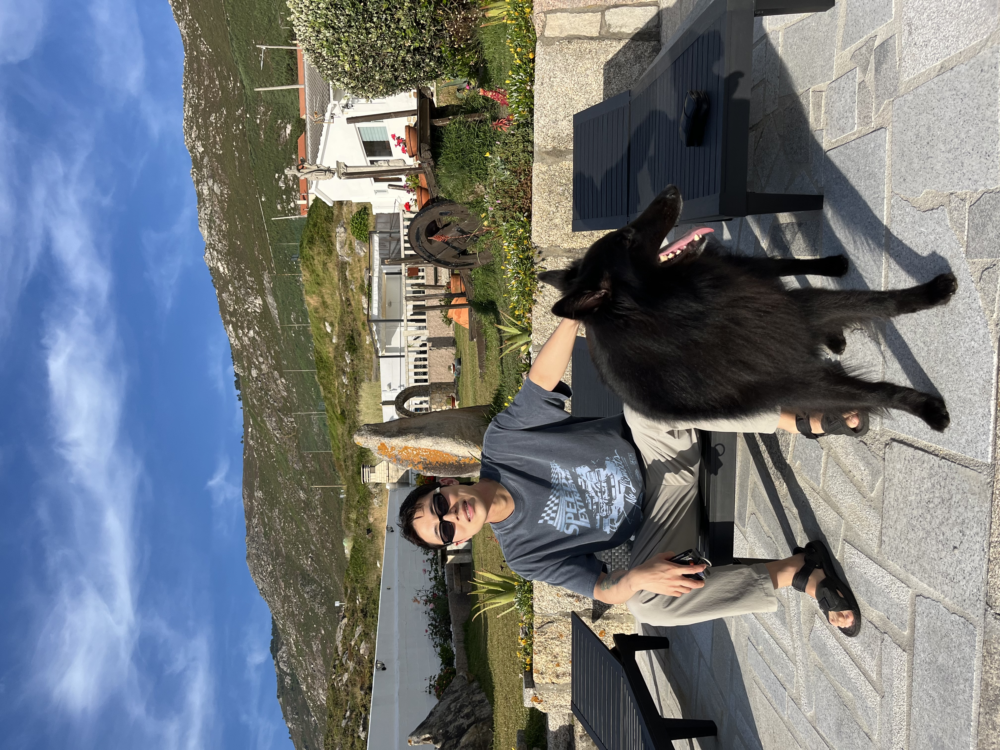
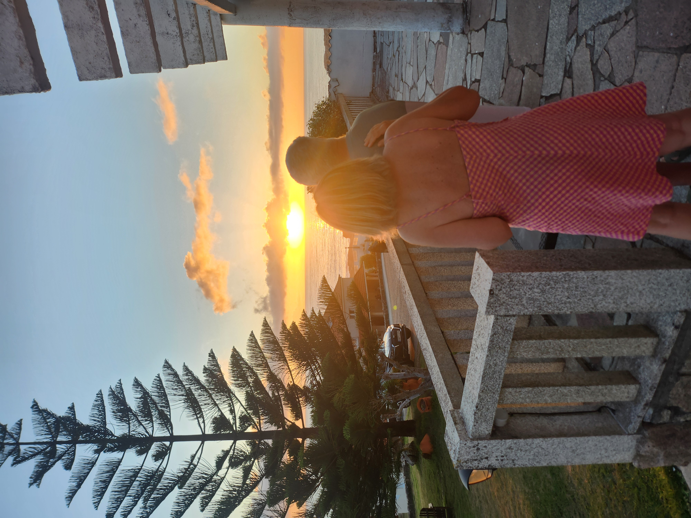
• 집에서 차량으로 50분 거리에 여유롭게 바다를 즐길 수 있는 외조부모님 댁이 있습니다. 개인적으로 제일 좋아하는 공간입니다.
◦ 외조부님들께서 '산티아고 순례길' 순례자들 대상으로 고즈넉한 곳에서 펜션을 운영하고 계십니다. 20 ~30명 수용 가능합니다(거실 제외 독립된 방 15개 이상).
◦ 주변 등산하기 좋은 산이 있습니다. 더불어 오래된 성터에 올라 경치 구경할 수 있습니다.
◦ 인근 도시에 지역 축제가 있을 수 있습니다.
• 여름에 한국과 달리 쾌청한 날씨가 주를 이루며, 비고 사람들은 아무때고 해변에 가는 것이 일상적인 문화입니다.
◦ 여름에만 해변에 열리는 간이 주점(Chiringuito)에서 음료를 마시며 여유롭게 쉴 수 있습니다.
◦ 주변 인근에 배를 타고 가면 산책하기 좋은 섬이 있습니다(하루 소요). 또는 선상 위에서 홍합이랑 화이트 와인을 먹는 액티비티도 있습니다.
• 해양 도시이기 때문에, 해산물(문어, 조개 등)요리가 많습니다(그렇다고 싸지는 않음 ㅋㅋ). 그리고 화이트 와인을 주로 마십니다(와인은 한국 대비 매우 저렴).
◦ 당연히 스페인이기 때문에, 하몽이나 스페인식 감자 오믈렛을 주식으로 먹습니다. 빠에야 등도 당연히 있습니다.
• '포르투갈'이나 '산티아고'와 가깝기 때문에 같이 방문하기 좋습니다.
◦ 포르토(포르투갈): 포르투갈의 '부산'같은 제 2의 도시. 버스 등 차량으로 1 ~ 2시간 정도 소요
◦ 산티아고 데 콤포스텔라('칠레'의 수도 '산티아고'와 다른 도시임!)까지는 차량으로 2시간, 기차로 한 시간 정도 소요
스페인 비고(Vigo) 입국 가이드
한국 출발 하객 추천 이동 동선(참고용)
공항 검색 키워드
마드리드(MAD)/바르셀로나(BCN) 공항으로 검색
포르토(포르투갈) 공항(OPO)으로 검색
산티아고 데 콤포스텔라 공항(SCQ)으로 검색
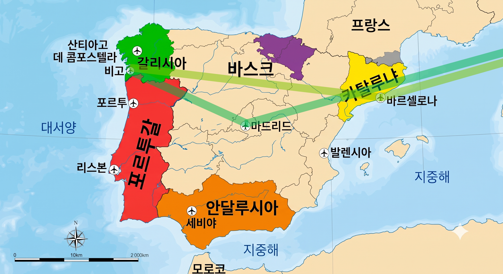
스페인 경유하기: 스페인 직항(또는 경유) ↔ 비고 공항(VGO)
• 이동 경로: 인천 공항(ICN) ↔ 마드리드(MAD)/바르셀로나(BCN) 공항 ↔ 비고 공항(VGO)
• 특징 안내: 편함. 직관적임
◦ 스페인 위주 여행하실 분들은 인천에서 직항이 있는 '바르셀로나', '마드리드'에서 여행 시작과 마무리가 가능
◦ 중동(두바이, 아부다비) 항공사 추천(저렴하면서도 비행 좌석과 서비스가 국내 저가 항공에 비해 월등함). 단점이라면 전쟁 이슈로 마음 졸일 가능성이 있음
◦ 중국 항공사가 현재 유럽 여행 기준 가장 저렴함. 취사 선택
◦ '스페인'하면 생각나는, '투우, 토마토 축제, 플라멩코' 같은 것들은 남쪽 지방인 안달루시아의 문화인데, 결혼식이 있는 8월 여름에는 40도를 기본으로 넘는 더위를 보이기 때문에 관광은 매우 비추천
• 단점: 비고 공항(VGO)은 소규모 공항으로, 타국에서 오갈 수 있는 비행기편이 거의 없다고 보면 됨. 바르셀로나 혹은 마드리드 공항에서만 올 수 있다고 생각하는 게 편함. 즉, 둘러 볼 수 있는 도시가 한정적이게 됨
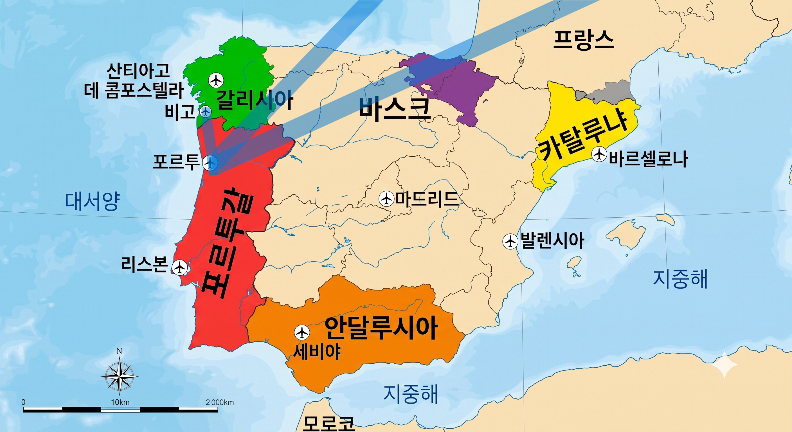
포르투갈 경유하기: (원하시는 여행지) ↔ 포르토 공항(OPO) ↔ 비고
• 이동 경로: 인천(ICN) ↔ 원하시는 여행지 ↔ 포르토(OPO) ➔ 비고 (직통 버스 또는 차량 픽업, 약 1시간 30분 소요)
• 특징 안내: 자유 여행 및 포르토(포르투갈) 관광 연계 가능
◦ 인천에서 다른 유럽 국가 여행 계획이 없는 경우라도 포르토를 통해 입국하는 것이 가장 저렴함
◦ 포르토(OPO) 공항은 대형 국제공항으로 항공편 노선이 다양하여 항공권 비용이 합리적이고 일정 조율이 편리함
◦ 포르투갈 최고 인기 관광지인 '포르토' 관광 가능
• 단점: 잦은 환승. 유럽 입국 후 포르투갈에서 스페인 비고까지 추가 지상 이동(버스/차량) 피로도 발생
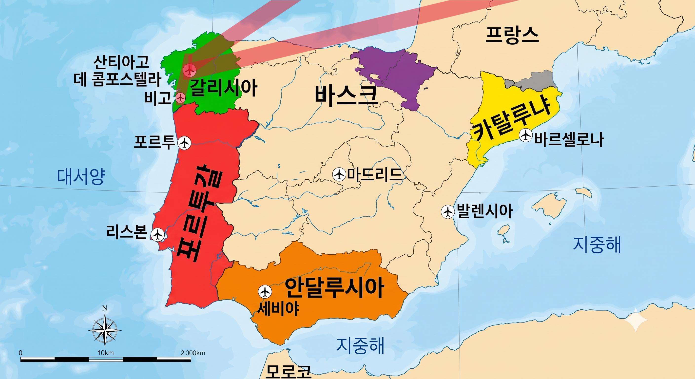
• 이동 경로: 인천(ICN) ↔ (원하시는 여행지) ↔ 산티아고 공항(SCQ) ↔ 비고: 공항 버스(40분) + 기차(한 시간)
• 특징 안내: 자유 여행
◦ 산티아고 공항(SCQ) 공항이 규모가 큰 국제 공항이라서 비행기편 양이 많고 경로가 다양하기 때문에 비행기표 값이 저렴함. 일반적으로 포르투갈 포르토 공항(OPO)이 더 저렴함. 따라서 대안적인 선택지임
◦ 그 유명한 '산티아고 순례길'의 최종 목적지인 '산티아고'에서 관광 가능
✈️ 8월 성수기 공항별 예상 항공료 (1인 왕복 기준)
| 도착 공항 | 경유 횟수 | 8월 예상가 |
|---|---|---|
| 비고 (VGO) | 1회(마드리드/바르셀로나) ~ 2회 | 160만 원 ~ |
| 포르토 (OPO) | 다수 (유럽/중동) | 140만 원 ~ |
| 산티아고 (SCQ) | 다수 (유럽/중동) | 150만 원 ~ |
참고용으로만 활용해 주세요.
문의 안내
카카오톡 메세지 남겨 주시면 제가 시차에 맞춰 연락 드리겠습니다.